SVM
Past
The origin of SVM can be dated back to 1947 when Frank Rosenblatt has just presented perceptron. Perceptron is a simple neural network and can classify data points into two parts. However, the perceptron a flaw: it requires the data to be linearly separable, meaning the data points can be perfectly separated by a straight line.
The basic idea of the perceptron are as follows: Suppose that in the $f:R^n $ space, there have n discrete points, denoted as 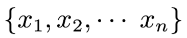Each of them either have property1 or property2.
We want to draw a hyperplane to seperate these two types of points, that is to say: let one type of points in the one side of the hyperplane.We define di = 1 if xi should above the hyperplane and di = -1 if xi should below the hyperplane. And we have 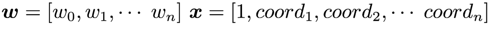 Then the hyperplane can be expressed as 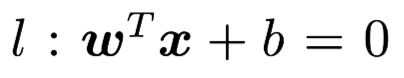 for each discrete point xi, we substitute their coordinates into the hyperplane equation and we can get: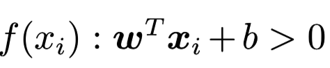 if xi is actually above the hyperplane 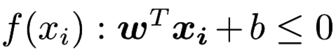 if xi is actually on the hyperplane or below the hyperplane. If di and xi have same sign, then xi is classified corrected, else we need to adjust the hyperplane.
Then we can convert the problem to an optimization problem: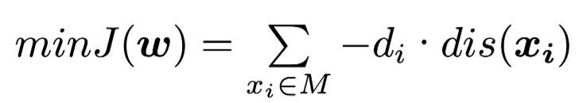
where M is the set of all wrong classified points and dis(xi) is the distance between point xi and the hyperplane.We can use gradient descent to solve this optimization problem.
Then, in 1963, Vapnik and his colleagues introduced SVM to address the limitations of the perceptron model. They pointed out “The Original Maximum Margin Hyperplane Algorithm”. We have $n$ data points: 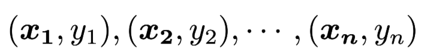 where xi is n-dimension vector and yi is 1 or -1,indicating the class of xi. If the data points are linearly separable, then we can find out two parallel hyperplanes that can seperate all points to their correct class and has the biggest distance between two hyperplanes. We name the two parallel hyperplanes “Maximum Margin Hyperplane “.
Then it is easy to see that all the parallel hyperplanes between Maximum Margin Hyperplane are solution to the classification problem. The two parallel hyperplanes can be expressed as 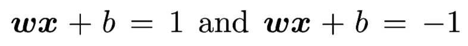 The distance between is 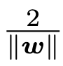.
We want to maximize the distance between the Maximum Margin Hyperplane. And at the same time, we need to guarantee that for all i, it need to satisify one of the following two conditions:
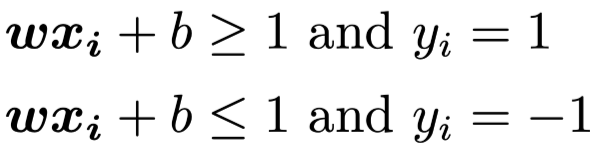
The two condition can be expressed together as: 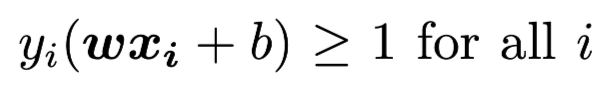
And further more, we can acknowledge that the Maximum Margin Hyperplane are decided absoluately from the closest xi, These xi are called Support Vector.
In 1992, Bernhard E. Boser and Isabelle M. Guyon introduced the Kernel Function to map the unlinearly separable points to higher dimension space to make them linearly separable. That is to say, make the difference between different parts more significant. Some most used kernels: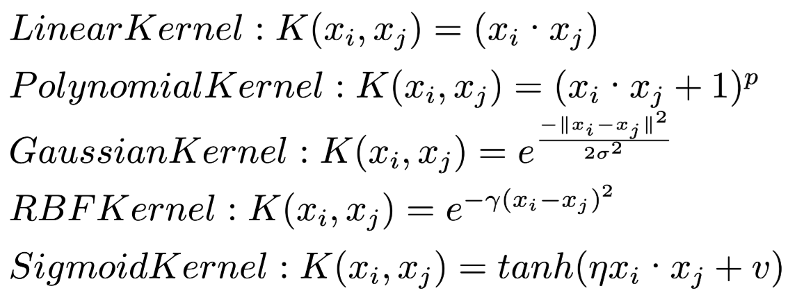
But It is note-worthing that a higher-dimensional feature space increases the generalization error of the support vector machine, but given enough samples, the algorithm can still perform well.
In 1993, Corinna Cortes introduced Soft Margin SVM. They introduced slack variable and penalty factor C Then we want to: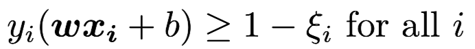
and the optimization goal are set as: 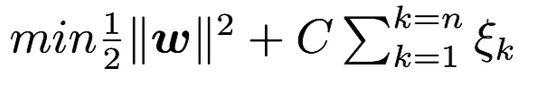
In 1990s, with rapid development of Machine learning, Vapnik intorduced Structural Risk Minimization(SRM) in 1970s get more and more attention. SRM is designed to find the best trade-off between a model’s complexity and its ability to generalize to unseen data, helping to prevent overfitting. When it comes to SRM, we have to mention Empirical Risk Minimization(ERM). ERM aims to minimize the error(lose) on training data, it focuses solely on training data. Thus ERM has a fatal flaw: it just focuses on fitting data as accurate as possible, without regard to model complexity, this will lead to overfitting – fit very good on training data but perform poorly on new, unseen data. The cause of overfit is model captures noise or irrelavant features.
SRM can alleviate overfitting by balancing a trade-off between the the model’s fit on the training data and its complexity.Mathematically, SRM minimizes a form of generalization error, which is the sum of the training error and the of model complexity. The penalty grows with the complexity of the model, reflecting the risk of overfitting.
Present
We organize the development history of SVM we can conclude a comprehensive SVM:
Two set of data points: 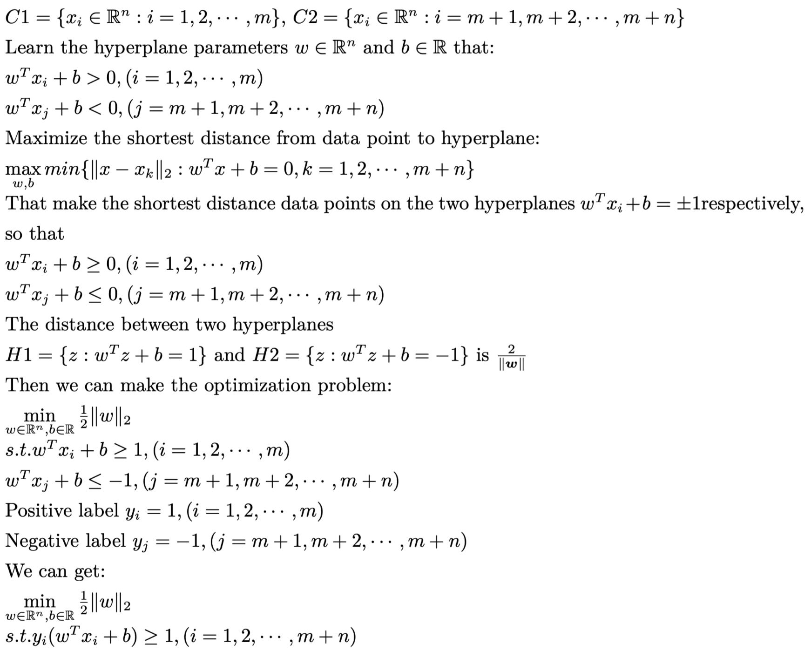
But what will happen if there does not eaxist (w,b) that can seperate data points into two parts?
We introduce slack variable and penalty factor C, that there exists (w,b) that satisify
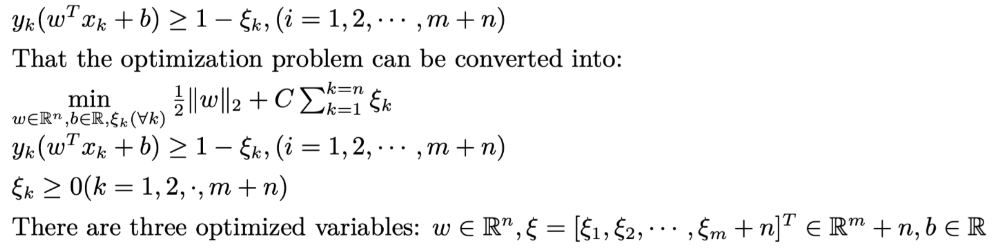
The SVM optimization can actually be seen as a quadratic programming problem:
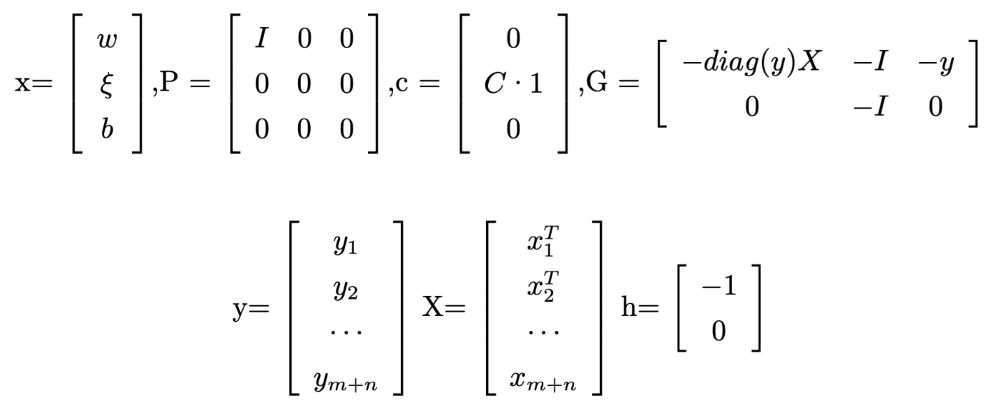
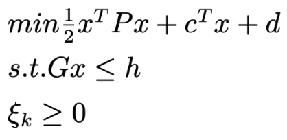
Since that P is a symmetric positive semidefinite metrix and Gx-h <= 0 is a convex function,then it is a convex optimization problem.
It’s prove SVM optimization satisifies Slater condition: Let w = 0, b = 0, slack variable penalty be 2 then we have:
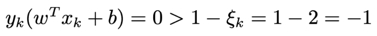
So the strong duality is satisified. So the SVM has the same optimal solution as its dual problem. And since the inequality constraints of SVM original problem are too much and too complex, we can convert the SVM problem to its dual problem.
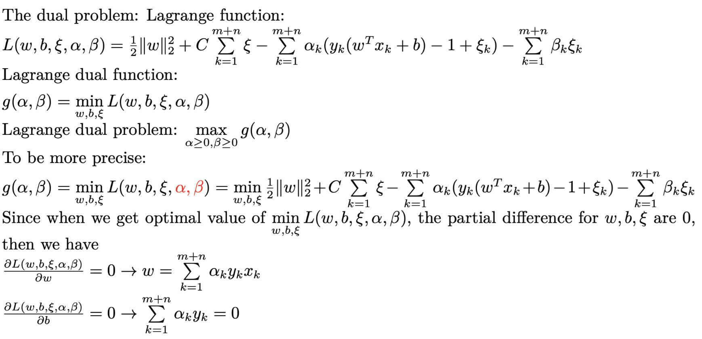
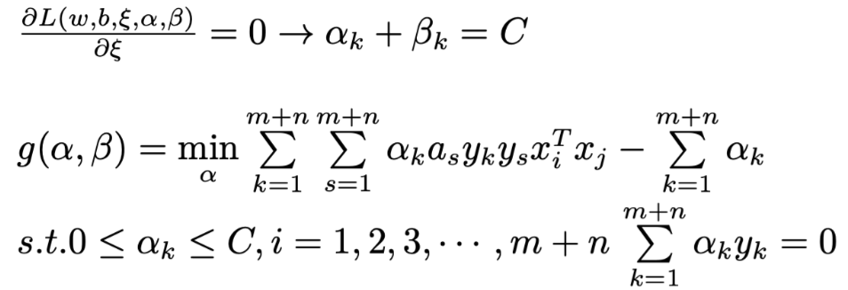
That is the dual problem of SVM.
For its powerful classification capability, SVM is not just limited to easy classification tasks, it is widely used in various fields. For example: pattern recognition, Object recognition, image classification, text categorization, Bioinformatics etc.
At the same time,SVM has been integrated with other advanced methods such as evolve algorithms, to enhance
the ability of classification and optimize parameters.
However, there are some limitations of SVM. First, the principal disadvantage of SVM is its huge computational cost in large data sets.(i.e. SVM is not suitable for large data set classification) At the same time, Support Vector Machines were originally designed to solve binary classification problems. When it comes to multiclassification, SVM does not present an easy solution. There are some ways to change the multiclassification problem to binary classification problem: one-against-one and one-against-all.
One-against-one method is at each step we take two class of multiclass and find out a set of hyperplanes that can seperate them. Do this until all pair of classes are processed. One-against-all method is at each step we take one class and regard other class as a whole class, we seperate these two “classes” and do this until all the classes are processed. It is easily to acknowledge that the ways to multiclassification require high computational resources and is very time-consuming.
Future
Since There are limitations of SVM, we human beings always want to correct theses limitations. For multiclassification problems, Now there exists one-against-one and one-against-all approach. But each of them has their own drawback.
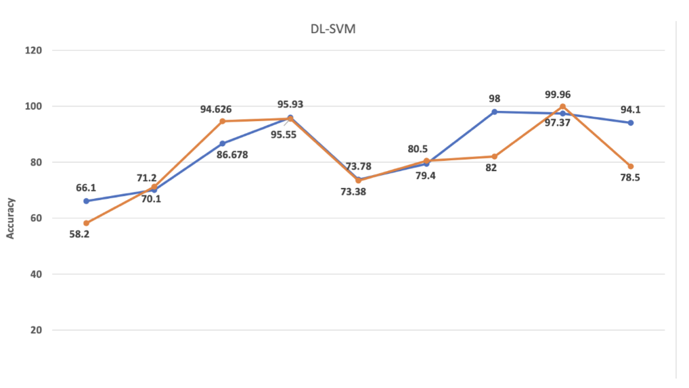
So ,for a large number of classes, new heuristic, stochastic or hybrid methods need to be designed to improve classification accuracy. And on thing that I am most interested in is Deep learning and SVM. In recent few years, deep learning has gain more and more attention and thus less attention are put on SVM.
Both of Deep learning and SVM has their own advantages and disadvantages. If we can let them work in synergy, I believe, the performance in some application will be improved.
Reference
[1]Support vector machine, Wikipedia, https://en.wikipedia.org/wiki/Support_vector_machine\\
[2]$致敬真神：SVM的进化史, kyle, https://www.bytezonex.com/archives/N0UqQYV4.html\\
[3]Slides in “Fundamental Optimization” in Xi’an Jiaotong University, Minnan Luo\
[4]Jair Cervantes,Farid Garcia-Lamont ,Lisbeth Rodríguez-Mazahua,Asdrubal Lopez, “A comprehensive survey on support vector machine classification: Applications, challenges and trends” Neurocomputing Volume 408, 30 September 2020, Pages 189-215\
[5]M. A. Cano Lengua and E. A. Papa Quiroz, “A Systematic Literature Review on Support Vector Machines Applied to Classification,” 2020 IEEE Engineering International Research Conference (EIRCON), Lima, Peru, 2020, pp. 1-4, doi10.1109/EIRCON51178.2020.9254028.